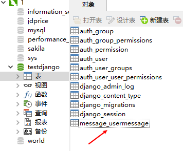

本文背景为慕课收费课程 Django 在线教育零基础到上线教程的第三章内容，主要是为零基础学习 Django 做一些了解，本文主要内容：在 Django 2.0 中如何配置、使用数据库实现前后端交互 。我将使用教程所讲解的实例来进行简单说明，附上 Github 源码：DjangoStart （该源码按照之前的两个分支进行备份，master 仅仅实现项目的创建、数据库链接和静态文本的部署，CompleteDjangoOfMySQL 是完成数据库与前端页面的连接。）
Part 1 : 新建 & 配置 Django 项目 配置流程
1.1 新建Django 项目 环境：
Pycharm 2019.1.3
Python 3.7
Djago 2.2
因为我们使用的 IDE 是 Pycharm ，所以我们就直接 New Project- Django-Project Interpreter 为 Anaconda Python3.7 环境。选择一个空的文件夹，我这里新创一个文件夹 djangostart 。新建之后的目录结构为：
1 2 3 4 5 6 7 djangostart/ manage.py djangostart/ __init__.py settings.py urls.py wsgi.py
如果你和我一样使用的 Pycharm ，那么你只需要点击运行的绿色按钮即可。当然我推荐使用命令行python manage.py runserver，注意该命令行执行的目录需要是和 manage.py 同一子目录下，下同 。运行之后我们即可在http://127.0.0.1:8000 查看我们的Django 首页。
新建App :打开 Terminal，输入 python manage.py startapp message就可创建message App。
1.2 配置 Django 文件目录 我们一般会在 Django 项目中配置如下的文件夹：
static:存放js、css、图片文件
log：存放log日志
media:存放用户上传的文件
templates:存放HTML文件
apps:当app过多时，我们使用该文件夹进行管理，但是需要注意的时再引入app时，需要添加apps
1.3 配置数据库 1 2 3 4 5 6 7 8 9 djangostart\djangostart\settings.py DATABASES = { 'default' : { 'ENGINE' : 'django.db.backends.MySQL' , 'NAME' : os.path.join(BASE_DIR,'db.sqlite3' ), } }
修改成如下形式
1 2 3 4 5 6 7 8 9 10 11 12 13 14 15 16 import pymysqlpymysql.install_as_MySQLdb() DATABASES = { 'default' : { 'ENGINE' : 'django.db.backends.mysql' , 'NAME' : "testdjango" , 'USER' :"root" , 'PASSWORD' :'password' , 'HOST' :"127.0.0.1" } }
在 Python3 中已经没有了 pymysql 这个库，替代库是 mysqlclient 。这个库在 Anaconda 中已经安装好了，但是运行之后会报错：
1 2 3 4 5 6 7 问题一：No module named 'MySQLdb' import pymysql pymysql.install_as_MySQLdb() 问题二：django.core.exceptions.ImproperlyConfigured: mysqlclient 1.3.3 or newer is required; you have 0.7.11.None https://www.cnblogs.com/ljd4you/p/8592765.html
将 App 的名字添加到设置中去：1 2 3 4 5 6 7 8 9 10 11 INSTALLED_APPS = [ 'django.contrib.admin' , 'django.contrib.auth' , 'django.contrib.contenttypes' , 'django.contrib.sessions' , 'django.contrib.messages' , 'django.contrib.staticfiles' , 'apps.message' ]
配置好了之后，打开 Terminal ，输入 python manage.pymakemigrations 和 python manage.py migrate，这两个语句就与 commit 和 push的作用是一样的。
其间报错：AttributeError: 'str' object has no attribute 'decode',解决办法 。
打开 Navicate 之后就可以看到我们的 testdjango 中添加了许多的表。
1.4 配置静态文件 将 message_form.html 和 style.css 分别存放到 templates 和 static\css文件夹下，具体代码参考：DjangoStart 。但是简单的引入会导致 css 文件无法生效，我们需要在 settings.py 中添加如下代码:
1 2 3 STATICFILES_DIRS =[ os.path.join(BASE_DIR,'static' ) ]
1.5 路由配置 1 2 3 4 5 6 7 8 9 10 11 12 13 14 15 16 djangostart\djangostart\settings.py from django.contrib import adminfrom django.urls import path,re_pathfrom apps.message import viewsurlpatterns = [ path('admin/' , admin.site.urls), re_path('form/' ,views.getform,name='go_form' ) ] djangostart\apps\message\views.py from django.shortcuts import renderdef getform (request) : return render(request,'message_form.html' )
我们访问 http://127.0.0.1:8000/form/ 即可查看到下面的页面：
Part 2 : 数据库操作 因为 Django 有了 model即 ORM 模式，所以我们不再需要写 SQL 原生语句了。model 的语法都在 App 的 models.py 文件进行编写。
1 2 3 4 5 6 7 8 9 10 11 12 13 14 15 16 17 18 19 djangostart\apps\message\models.py from django.db import modelsclass UserMessage (models.Model) : object_id = models.CharField(max_length=50 ,default="" ,primary_key=True ,verbose_name=u"主键" ) name=models.CharField(max_length=50 ,verbose_name=u"用户名" ) email=models.EmailField(verbose_name=u"邮箱" ) address=models.CharField(max_length=100 ,verbose_name=u"联系地址" ) message=models.CharField(max_length=500 ,verbose_name=u"留言信息" ) class Meta : verbose_name=u"用户留言信息" ''' 通过一个内嵌类 class Meta 给你的model 定义元数据 他下面还会有许多的选项可供我们选择， 如果我们不对其进行修改的话就是默认的继承 '''
上面就是数据库的配置语句，CharField、EmailField 都是数据类型。我们仍旧需要执行之前执行过的语句：python manage.pymakemigrations 和 python manage.py migrate，如果没有报错的话，我们就可以在 Mysql 数据库中看到以函数名为表名的一张表：

查看下表内的字段
所有的有关数据库的操作大部分都会存放在 views.py 文件中，下面列举了有关该项目的所有的操作，包括数据库的读、写、增、删、将数据库数据展示在前端和将前端数据传入数据库等操作。
1 2 3 4 5 6 7 8 9 10 11 12 13 14 15 16 17 18 19 20 21 22 23 24 25 26 27 28 29 30 31 32 33 34 35 36 37 38 39 40 41 42 43 44 45 46 47 48 49 50 51 52 53 54 55 56 57 58 59 60 61 62 63 64 65 66 67 68 69 70 djangostart\apps\message\views.py from django.shortcuts import renderfrom .models import UserMessagedef getform (request) : if request.method == "POST" : name = request.POST.get('name' , '' ) message = request.POST.get('message' , '' ) address = request.POST.get('address' , '' ) email = request.POST.get('email' , '' ) user_message = UserMessage() user_message.name = name user_message.message = message user_message.address = address user_message.email = email user_message.object_id = 'helloworld3' user_message.save() ''' djangostart\templates\message_form.html <form action="{% url 'go_form' %}" method="post" class="smart-green"> <label> <span>姓名 :</span> <input id="name" type="text" name="name" class="error" placeholder="请输入您的姓名" value = {% if my_message.name == 'afrunk' %}你的名字{% endif %}> <div class="error-msg"></div> </label> ''' message = None all_messages = UserMessage.objects.filter(name='afrunk' ) if all_messages: message = all_messages[0 ] return render(request,'message_form.html' ,{"my_message" :message})